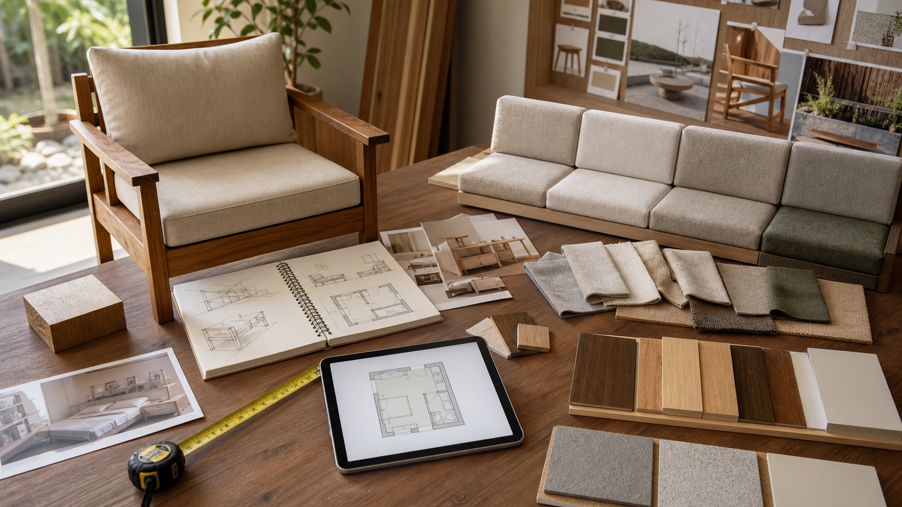

2026.07.23 가구·인테리어·목공 일일 트렌드

오늘의 흐름은 세 가지로 압축됩니다. 첫째, 야외가구에서도 알루미늄의 목재 질감 모사보다 실제 원목의 따뜻한 촉감이 다시 주목받고 있습니다. 둘째, 소파와 좌식 가구는 휴식용 물건을 넘어 음향, 진동, 마사지, 환기, 앱 제어를 결합한 생활 장치로 확장되고 있습니다. 셋째, 소비자는 가격에 민감하지만 기숙사와 소형 주거처럼 뚜렷한 사용 목적이 있을 때는 수납, 이동, 설치가 쉬운 가구에 지출합니다.
1. Zuo Modern, Casual Market에서 솔리드 티크 야외가구로 이동
Furniture Today는 7월 22일 Zuo Modern이 AmericasMart의 Casual Market에서 Sakina라는 솔리드 티크 컬렉션을 선보였다고 보도했습니다. 이 컬렉션은 식탁과 좌석류를 포함하며, Zuo가 그동안 많이 사용하던 알루미늄 기반 목재 질감 표현에서 실제 티크 소재로 확장한 사례입니다. 보도에 따르면 회사는 베트남의 새 제조 파트너를 발굴했고, 가치 지향 가격대의 주거·호스피탈리티 고객에게 자연 목재 옵션을 제공하려 합니다.
왜 중요한가. 야외가구 시장에서도 고객은 단순히 “나무처럼 보이는” 표면보다 손끝에 닿는 진짜 목재의 밀도와 노화를 원합니다. 목간은 실내용 원목가구 상담에서도 발코니, 테라스, 현관 벤치처럼 반외부 조건을 함께 묻고, 오일 재마감 주기와 물 빠짐 구조를 포함한 작은 야외형 옵션을 준비할 수 있습니다.
- Furniture Today, Zuo teak intro at Casual Market · 2026.07.22
- Designers Today, 동일 보도 제휴 게재 · 2026.07.22
2. Flexsteel, 소파를 ‘기능형 생활 장치’로 밀어붙인다
Flexsteel은 Las Vegas Market을 앞두고 맞춤 upholstery, 모션 가구, 케이스굿, 웰니스 좌석을 아우르는 여름 2026 라인업을 공개했습니다. Furniture Today 보도는 Flexsteel Pulse라는 내장형 몰입 사운드 시스템, 진동 동기화, 열·마사지·환기·앱 제어 기능을 갖춘 모션 그룹을 핵심으로 소개했습니다. 새 라인업은 구성 가능한 모듈, 숨은 기능, Big & Tall 대응, 맞춤 디테일을 함께 강조합니다.
왜 중요한가. 목간이 모든 기능을 전자화할 필요는 없지만, 고객은 이제 “앉는 물건”에 더 많은 생활 문제 해결을 기대합니다. 책상과 소파 주변의 충전선, 리모컨 수납, 열 배출, 등받이 각도, 팔걸이 높이 같은 보이지 않는 사용성을 도면 단계에서 체크리스트로 만들면 맞춤가구의 설득력이 커집니다.
3. 백투칼리지 가구 지출, 기숙사·소형 주거 수요가 새 고점
NRF는 7월 14일 2026년 백투스쿨·백투칼리지 조사에서 대학생과 가족의 지출이 사상 처음 1,000억 달러를 넘을 것으로 전망했습니다. 대학생 가구·아파트 furnishings 항목은 평균 194달러, 총 140억 달러 규모로 제시됐습니다. Home Accents Today는 7월 22일 NRF 웨비나 내용을 바탕으로 저축 감소와 신용카드 연체율 부담에도 계절 행사 지출은 이어지고 있으며, 기숙사·아파트 가구 지출이 9.4% 늘 것으로 보도했습니다.
왜 중요한가. 소형 공간용 가구는 싸기만 해서 팔리지 않습니다. 빠른 설치, 해체와 이동, 침대 밑 수납, 벽 손상 없는 고정, 좁은 동선에서의 회전 반경처럼 실제 입주 문제를 해결해야 합니다. 목간은 원목 책상·선반을 기숙사용으로 그대로 축소하기보다, 분해 가능한 다리 구조와 상판 보호, 케이블 정리를 표준 옵션으로 묶는 것이 실무적입니다.
- NRF, Majority of Back-to-School Shoppers Get a Head Start · 2026.07.14
- Home Accents Today, NRF consumer spending analysis · 2026.07.22
4. AkzoNobel, 가격·효율·탄소 감축이 마감재 시장의 핵심 변수임을 보여준다
AkzoNobel은 7월 22일 2026년 2분기 실적을 발표하며 유기 매출이 가격 효과로 2% 성장했고, 조정 EBITDA 마진이 15.4%로 오른 다섯 번째 연속 개선 분기라고 밝혔습니다. 회사는 운영 부문 탄소 배출을 50% 줄이는 목표를 2030년보다 4년 앞서 달성했다고도 발표했습니다. Furniture Today 역시 같은 날 원가 효율과 가격 정책이 실적 개선을 이끌었다고 정리했습니다.
왜 중요한가. 원목가구 공방의 마감재 선택은 색감만의 문제가 아닙니다. 공급 안정성, 가격 인상 가능성, 저VOC·탄소 감축 스토리, 보수 가능성까지 고객에게 설명해야 합니다. 목간은 견적서에 마감 옵션을 “오일/우레탄” 정도로만 쓰지 말고, 촉감, 내오염성, 보수 방식, 예상 재마감 주기를 함께 표기하는 방식으로 신뢰를 높일 수 있습니다.
- AkzoNobel 공식 Q2 2026 발표 · 2026.07.22
- Furniture Today, AkzoNobel Q2 results · 2026.07.22
5. 가격 민감기에도 ‘상담형 전시’는 구매 이유를 만든다
Furniture Today의 7월 22일 홈 화면은 Zuo의 티크, Flexsteel의 기능형 소파, AkzoNobel의 가격·효율, NRF 소비 지표를 같은 날 주요 이슈로 묶었습니다. 공통점은 신제품의 양보다 구매 판단의 근거가 더 중요해졌다는 점입니다. 소재가 왜 바뀌었는지, 기능이 어떤 생활 문제를 해결하는지, 가격이 왜 유지되거나 오르는지 설명할 수 있는 브랜드가 고객의 망설임을 줄입니다.
왜 중요한가. 목간 홈페이지의 가구 이야기는 단순 홍보보다 상담 전 교육 콘텐츠로 쓰일 때 가치가 큽니다. 새 글을 상품 상세, 맞춤 가이드, 상담 문의와 연결하고, 공모전 제출물에도 “시장 흐름을 이해한 제작 의도”를 붙이면 디자인 설명의 밀도가 올라갑니다.
- Furniture Today 홈, 2026.07.22 주요 업계 이슈 확인 · 2026.07.22 확인
오늘의 실무 인사이트
- 반외부용 원목 옵션을 작게 실험한다. 대형 야외 세트보다 현관 벤치, 베란다 스툴, 식물 선반처럼 제작 리스크가 낮은 품목부터 오일 마감, 물 빠짐, 고무발, 재마감 안내를 표준화합니다.
- 가구의 기능을 전자기기보다 동선 문제로 번역한다. 충전, 수납, 열 배출, 케이블 정리, 팔걸이 높이, 등받이 각도 같은 생활 기능을 상담지에 넣으면 기능형 가구 트렌드를 목공 문법으로 흡수할 수 있습니다.
- 소형 주거 상품은 분해·이동·보관을 먼저 설계한다. 기숙사나 원룸 고객에게는 고급 수종보다 설치 시간, 이사 가능성, 벽 손상 없는 고정, 침대 밑 수납과 책상 케이블 홀이 더 직접적인 구매 이유입니다.
- 마감재 설명을 견적의 신뢰 장치로 쓴다. 마감별 촉감, 내오염성, 보수 난이도, 냄새, 건조 시간, 재마감 주기를 한 표로 제공하면 가격 차이가 설득 가능한 정보가 됩니다.
- 트렌드 글을 상담 전 링크로 활용한다. 고객 문의 답변에 관련 일일 트렌드 글을 함께 보내면 목간이 단순 제작자가 아니라 소재, 사용성, 시장 맥락을 읽는 파트너로 보입니다.